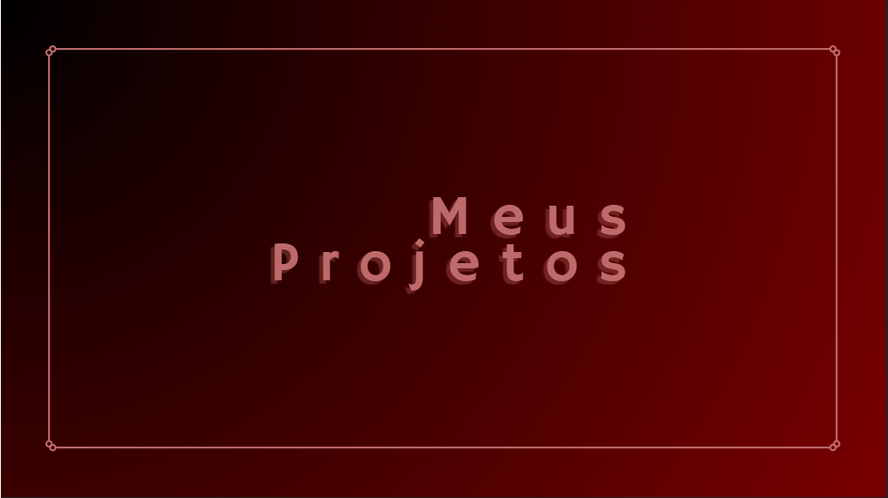

Sobre mim
Meu nome é Maria Fernanda, tenho 18 anos e sou de São Paulo. Atualmente não atuo na área da tecnologia, porém meus estudos tem foco em front-end
Sou apaixonada por resolver problemas e aprender coisas novas. Desde do final de 2023, venho me dedicando a aprimorar minhas habilidades na área da tecnologia
Fora do código, gosto de desenhar, jogar, ler e etc. Acredito que a combinação entre técnica e criatividade é o que faz qualquer projeto brilhar.
Aqui no meu portfólio você vai encontrar meus projetos mais recentes, um pouco sobre minha jornada e como posso contribuir com o seu time ou ideia.
Meus valores
-
Autencidade: Acredito que ser quem a gente é — com todas as nossas cores — é o que traz verdade para qualquer trabalho.
-
Criatividade com propósito: Não basta fazer bonito, tem que fazer sentido. Busco sempre unir estética, funcionalidade e identidade.
-
Aprendizado constante: A área de tecnologia muda todo dia, e eu adoro aprender coisas novas e sair da zona de conforto.
-
Respeito e empatia:Trabalho melhor quando existe troca, escuta e cuidado — seja com pessoas, ideias ou códigos.
-
Compromisso:Quando eu me envolvo com algo, é pra valer. Levo a sério prazos, qualidade e responsabilidade com o que entrego.
Meus conhecimentos
Estou construindo minha jornada na área da tecnologia com dedicação e curiosidade. Tenho experiência com ferramentas criativas, conhecimentos em manutenção e sistemas, e estou em constante aprendizado no desenvolvimento web. Aqui está um resumo do que já explorei e o que estou aprendendo no momento:
Ferramentas e Softwares:
- 🎨 Blender
- 🖌️ Photoshop
- 🕹️ Game Engine
- 🛠️ Conhecimentos em hardware
- 💿 Conhecimentos em software
Atualmente aprendendo:
- 💻 HTML
- 🎨 CSS
- 🧠 JavaScript
Meus projetos
Aqui você encontra alguns dos trabalhos que já desenvolvi — desde criações gráficas até os meus primeiros passos no desenvolvimento web.
Minha abordagem e processo
Acredito que todo projeto é uma oportunidade de aprender, criar algo único e entregar valor de forma verdadeira. Meu processo mistura planejamento, criatividade e adaptação — sempre respeitando a essência da ideia e o que ela precisa comunicar.
-
Entendimento: Antes de tudo, procuro entender o propósito do projeto, quem é o público e qual é a mensagem principal.
-
Planejamento:Organizo ideias, referências e defino quais ferramentas e linguagens vou usar.
-
Criação: Hora de colocar a mão na massa — seja desenvolvendo código, modelando no Blender ou criando no Photoshop.
-
Testes e ajustes: Gosto de revisar, testar, pedir feedback e ajustar o que for necessário pra deixar tudo fluido e funcional.
-
Entrega e aprendizadoProjeto finalizado? Hora de publicar e refletir sobre o que deu certo e o que pode melhorar no próximo.
Levo meu processo com leveza, mas com responsabilidade. Estou sempre buscando evoluir como pessoa e profissional, e cada projeto é um passo nessa caminhada.
Disponibilidade e interesse
No momento, estou disponível para colaborar em projetos criativos, freelas, parcerias ou até mesmo vagas júnior/estágio na área de tecnologia e design digital.
Tenho interesse especial por áreas como desenvolvimento web, arte digital, modelagem 3D e experiências interativas. Estou sempre aberta a aprender coisas novas, explorar ideias diferentes e crescer junto com pessoas que compartilham essa paixão por criar.
Se você tem um projeto, uma ideia ou quer trocar uma ideia sobre tecnologia e criação, vai ser um prazer conversar!